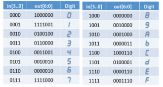
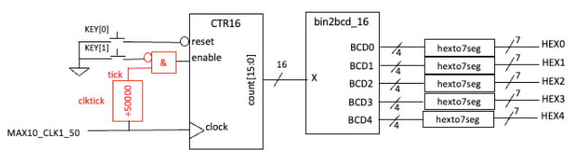
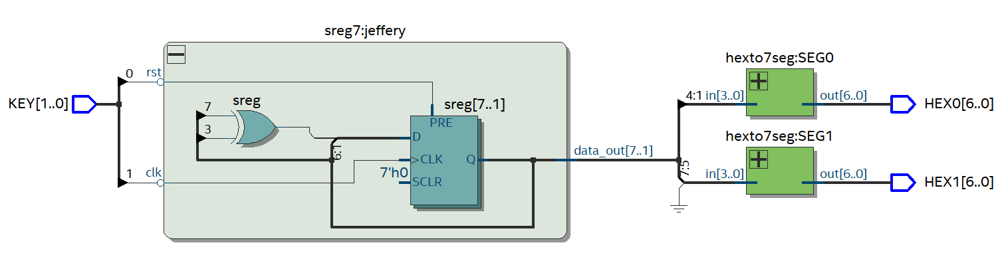
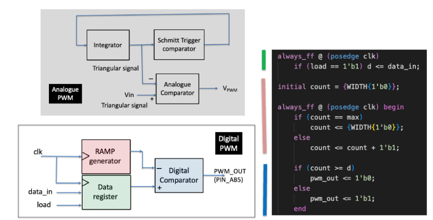

Driving a segments display is rather simple. All we have to do is create a look up table that corresponds to the individual segments and we’re all good .

The same process is repeated for three displays. Each display can show up to 4 bits. Note that we are displaying the binary numbers as hexadecimal on the segment displays. (The video below has been reflected for some reason).
This counter starts counting whenver en is pressed. The KEY button is AND’ed with the main system clock, and is wired to the enable port of the CTR module.

Linear feedback shift registers allow us to generate a sequence of seemingly random numbers. For this reason, they are called “pseudorandom” as the sequence is completely predictable.

